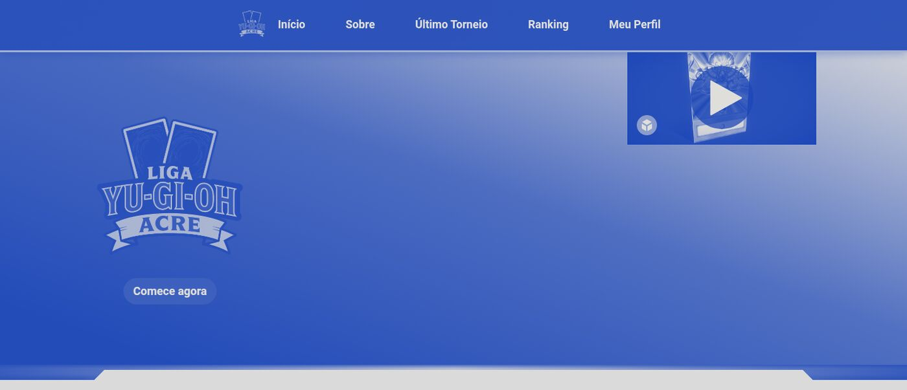
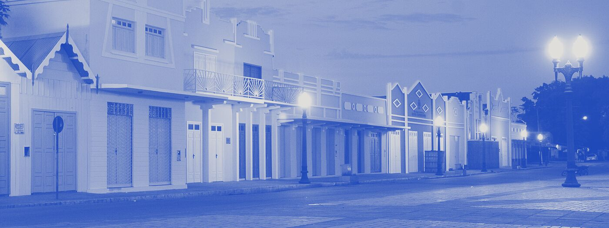
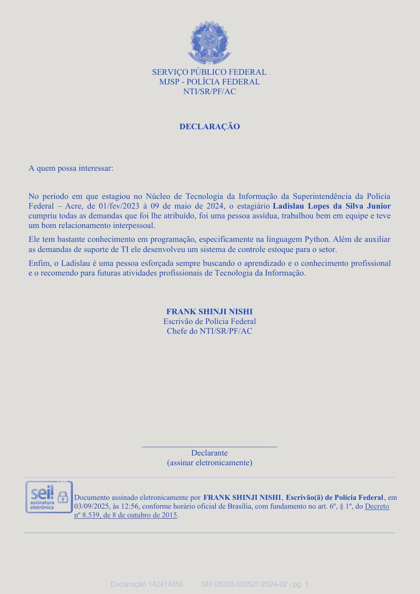
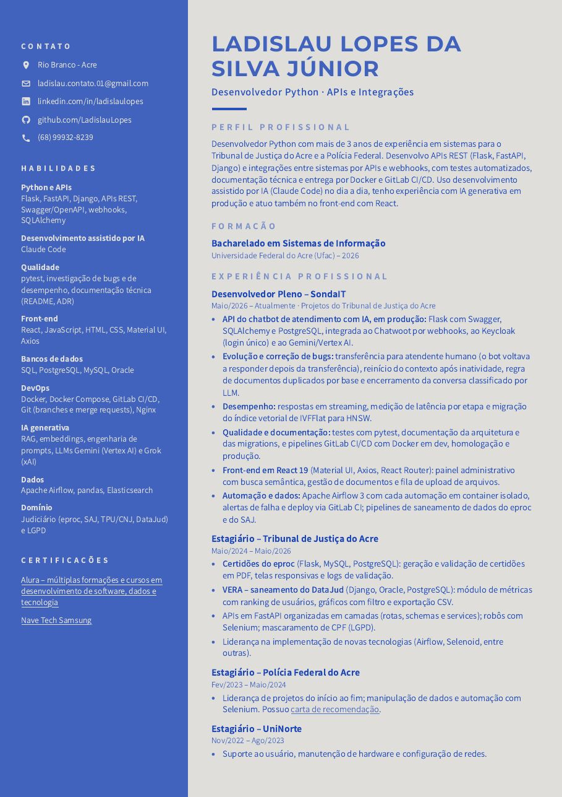
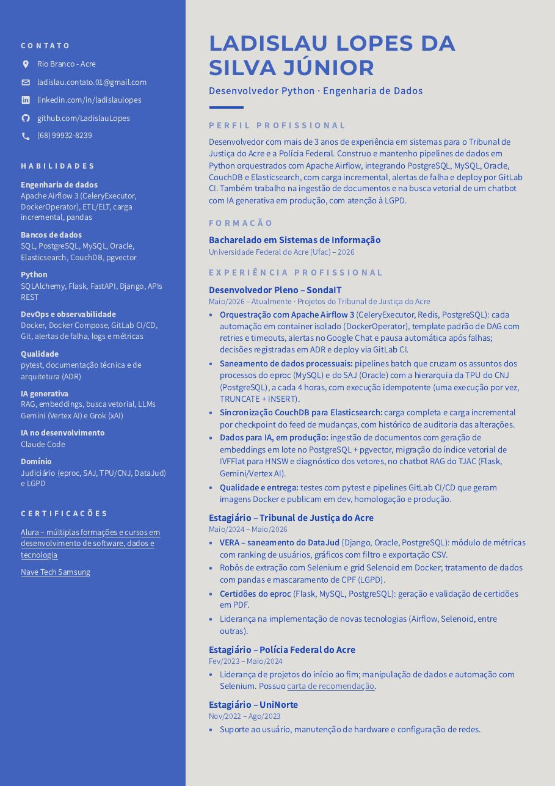
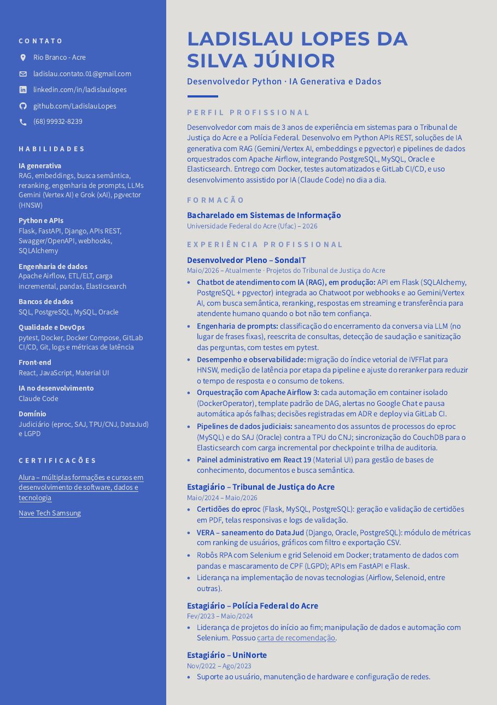

Ladislau Lopes
Do código
à produção
Sou desenvolvedor Python pleno em Rio Branco, no Acre. Faço APIs, IA e automações para o Judiciário e coloco tudo no ar com Docker e GitLab CI.
Falar comigoNo Tribunal de Justiça
Desde 2024 trabalho nos sistemas do Tribunal de Justiça do Acre, primeiro como estagiário e, desde maio de 2026, como desenvolvedor pleno da SONDA IT. Os sistemas são internos, então mostro o problema, a arquitetura e a stack, sem nomes, telas ou dados.
-
Chatbot com RAG
Atendimento com IA em produção. Uma API em Flask recebe as mensagens do Chatwoot por webhook, busca trechos no PostgreSQL com pgvector, reordena com Gemini e responde em streaming. Sem confiança, passa a conversa para um atendente humano. Também medi a latência de cada etapa, migrei o índice vetorial de IVFFlat para HNSW e fiz o painel em React 19 para gerir bases, documentos e busca semântica. A API e o painel saem em imagens Docker pelo GitLab CI, em homologação e produção.
-
CI/CD com GitLab
Escrevi os pipelines de GitLab CI de uns quinze projetos do time. O build roda com Docker-in-Docker, a imagem vai para o registry marcada com o commit e o deploy sai por SSH ou por runner no servidor, em homologação e produção conforme a branch. O .env é gerado das variáveis protegidas do CI, um smoke check valida o que subiu e jobs manuais restauram dumps do Package Registry. Também cuidei do endurecimento: headers de segurança no Nginx e segredos sem valor padrão no código.
-
Stack de automação
Padronizei os robôs e as automações do time numa stack só: cada repositório tem Dockerfile em infra/docker, compose, pipeline, .env.example e README com diagrama e ADR. Tudo roda no Apache Airflow 3 (CeleryExecutor, Redis, PostgreSQL), um container por tarefa com DockerOperator, e os robôs em Selenium usam um grid Selenoid com VNC e vídeo. Na operação: limites de CPU e memória por serviço, limpeza de containers órfãos, alertas de falha no Google Chat, troca de versão e a migração para um servidor novo.
-
Serviços self-hosted
Subi e mantenho serviços open source em Docker Compose. O Chatwoot de produção tem healthchecks, um serviço que prepara o banco a cada subida, a identidade visual fixada e a política de segurança do widget. Também implantei um sistema de senhas de atendimento, com seed inicial e restauração de dump, e o Elasticsearch com Kibana.
-
Pipelines de dados
Saneamento dos assuntos dos processos de dois sistemas judiciais, um em MySQL e outro em Oracle, contra a Tabela Processual Unificada do CNJ, a cada quatro horas e com execução idempotente. E a sincronização de um CouchDB para o Elasticsearch: carga completa, carga incremental pelo feed de mudanças e trilha de auditoria de cada documento alterado.
-
Painel de RH
Painel de indicadores de gestão de pessoas. O login é a conta da rede (LDAP), as permissões vêm do grupo, as planilhas entram pela API e todo cálculo acontece no backend: o navegador só exibe. Express, PostgreSQL e Nginx, com pipeline próprio: build com Docker-in-Docker, registry e deploy por SSH em homologação e produção.
-
Certidões em PDF
Geração e validação de certidões em PDF, com telas responsivas e registro de cada validação. Flask, MySQL, PostgreSQL e ReportLab, servido com Gunicorn em Docker e publicado pelo GitLab CI.
Fora do expediente
-
GitLab CE com runner, Plane CE e um registry Docker com TLS, autenticação e interface web, tudo em Docker Compose. O Plane só integra com o GitLab na edição paga, então escrevi a ponte: um serviço em FastAPI que recebe os webhooks dos dois lados. Push e merge request viram comentário e mudam o estado do work item; work item criado vira issue no GitLab, com proteção contra laço.
-
Case de engenharia de dados para uma rede fictícia de hamburgueria: 40 bancos PostgreSQL gerados com Faker viram um data warehouse em arquitetura medalhão. O Airflow orquestra, o DuckDB extrai para Parquet no MinIO, o dbt monta o star schema com testes e uma API em FastAPI alimenta um painel que aceita perguntas em linguagem natural via Claude. Oito decisões ficaram registradas em ADR.
-

Guias de matchup de Tekken 8 mantidos por um grupo de jogadores, uma página por personagem: o que ele quer fazer, o que punir e como sair da pressão. Astro Starlight, em português e inglês, com busca. Nada entra no main sem pull request aprovado por outra pessoa, nem do administrador.
-

Página da comunidade de duelistas do Acre, com eventos, último torneio e ranking, em HTML, CSS e JavaScript. Para os torneios fiz um importador em Python que lê o XML do programa de torneio, grava em SQLite e exporta para Excel.
-
Trabalho de conclusão de curso na Ufac: detecção de placas de veículos com YOLOv8, treinado em duas rodadas sobre um conjunto público de imagens anotadas.
-
Demonstração educacional de segurança: uma API local que compara a chave caractere por caractere e um script que mede o tempo de resposta e recupera a chave numa busca linear, em vez de força bruta. Mostra na prática por que existe o hmac.compare_digest.
-
Grid Selenoid no Docker com Chrome em VNC, gravação em vídeo e log por sessão, e execução em lote. Foi a base do grid que depois levei para o trabalho.
-
O sistema de entrada e saída de itens do setor de TI que fiz no estágio da Polícia Federal. Django, com uma versão desktop em pywebview e exportação para Excel.
-
Programa em Python para baixar um vídeo do YouTube ou só o áudio.

Sobre mim
Sou de Rio Branco e aprendi a programar resolvendo problemas de verdade. Comecei no suporte da UniNorte, configurando redes e consertando máquinas, e no estágio da Polícia Federal fiz meu primeiro sistema inteiro: o controle de estoque do setor de TI, em Python.
Em 2024 entrei no Tribunal de Justiça do Acre como estagiário de desenvolvimento, com foco em automação. Ali passei dos robôs em Selenium para APIs em Flask e FastAPI, para IA generativa em produção e, cada vez mais, para a infraestrutura que põe tudo isso no ar.
Desde maio de 2026 sou desenvolvedor pleno pela SONDA IT, nos projetos do Tribunal. Cuido do chatbot de atendimento com RAG, dos pipelines de GitLab CI do time e da stack de Airflow e Selenoid em Docker onde rodam as automações.
Gosto de deixar o trabalho testado, documentado em README e ADR e com um deploy que não depende de alguém lembrar de um passo. E dado de pessoa pede cuidado: mascaramento de CPF e atenção à LGPD fazem parte do serviço.
Me formo em Sistemas de Informação pela Ufac em 2026. Fora do trabalho, mantenho um homelab com GitLab e Plane, escrevo guias de Tekken 8 com outros jogadores e fiz a página da liga de Yu-Gi-Oh! do Acre.
Ladislau Lopes da Silva Júnior
Desenvolvedor Python pleno, Rio Branco (AC)
Trajetória
| Período | Cargo | O que fiz |
|---|---|---|
| mai. 2026 – hoje | Desenvolvedor plenoSONDA IT, nos projetos do Tribunal de Justiça do Acre | Chatbot com RAG em produção, pipelines de GitLab CI do time, stack de Airflow 3 e Selenoid em Docker, serviços self-hosted e saneamento de dados processuais. |
| mai. 2024 – mai. 2026 | Estagiário de desenvolvimentoTribunal de Justiça do Acre | Robôs RPA com Selenium e Selenoid, certidões em PDF, métricas em Django, APIs em FastAPI e os primeiros deploys com Docker e GitLab CI. Levei o Airflow e o Selenoid para o time. |
| fev. 2023 – mai. 2024 | Estagiário de TIPolícia Federal no Acre | Controle de estoque do setor, automação com Selenium e projetos conduzidos do início ao fim. |
| nov. 2022 – ago. 2023 | Estagiário de suporteUniNorte | Suporte ao usuário, manutenção de hardware e configuração de redes. |
| 2026 | Bacharelado em Sistemas de InformaçãoUniversidade Federal do Acre (Ufac) | Formação superior. Cursos e formações na Alura em software, dados e tecnologia, e o programa Nave Tech Samsung. |
Ferramentas
- DevOps
- Docker e Docker Compose, GitLab CI/CD com Docker-in-Docker, runners e registry, deploy por SSH, Nginx, Gunicorn, Linux, healthchecks e limites de recursos.
- Self-hosted
- Chatwoot, Elasticsearch e Kibana, Selenoid, GitLab CE, Plane CE e registry Docker com TLS.
- IA generativa
- RAG, embeddings, busca semântica, reranking, engenharia de prompts, pgvector com HNSW, Gemini (Vertex AI) e Grok (xAI).
- Python e APIs
- Flask, FastAPI, Django, SQLAlchemy, Swagger/OpenAPI e webhooks.
- Dados
- Apache Airflow 3, pandas, DuckDB, dbt, Elasticsearch, ETL com carga incremental.
- Bancos de dados
- PostgreSQL, MySQL, Oracle, CouchDB, SQLite e pgvector.
- Front-end
- React 19, Material UI, JavaScript, HTML, CSS e Astro.
- Qualidade
- Git com branches e merge requests, testes com pytest, investigação de bugs e de desempenho, documentação em README e ADR.
- Domínio
- Judiciário (eproc, SAJ, TPU do CNJ, DataJud) e LGPD. No dia a dia, desenvolvimento assistido por IA com Claude Code.

“Ele tem bastante conhecimento em programação, especificamente na linguagem Python. […] o Ladislau é uma pessoa esforçada sempre buscando o aprendizado e o conhecimento profissional.”
Frank Shinji Nishi, chefe do Núcleo de Tecnologia da Informação da Polícia Federal no Acre, em declaração de recomendação de 2025.
Currículos

Desenvolvedor Python
Para vagas de APIs e integrações. Desenvolvo APIs REST em Flask, FastAPI e Django e integro sistemas por APIs e webhooks, com testes automatizados, documentação técnica e entrega por Docker e GitLab CI/CD. Tenho IA generativa em produção e atuo também no front-end com React.

Engenharia de dados
Para vagas de dados. Construo e mantenho pipelines em Python orquestrados com Apache Airflow, integrando PostgreSQL, MySQL, Oracle, CouchDB e Elasticsearch, com carga incremental, alertas de falha e deploy por GitLab CI. Também cuido da ingestão de documentos e da busca vetorial de um chatbot em produção.

IA generativa e dados
Para vagas de IA. Desenvolvo soluções de IA generativa com RAG (Gemini no Vertex AI, embeddings e pgvector), engenharia de prompts testada com pytest e pipelines de dados com Apache Airflow, entregues com Docker e GitLab CI/CD.
Contato
Tem uma vaga ou um projeto? Escreva aqui que eu respondo.
Abre o seu programa de email com a mensagem pronta.
- Telefone
- (68) 99932-8239
- in/ladislaulopes
- GitHub
- LadislauLopes